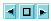

Setting the Status Attribute
Once you have examined the code for the instance, you can classify the hit as a violation, or mark it as something that can be ignored. In this way, you can save information about hits you have already examined and track progress on coding violations.
Below the list of instances, a toolbar appears that allows you move between instances and to set a Status attribute for those you select.
Â
You can use the navigation buttons () to move forward and back among the list of instances. The square button in the center returns you to your original selection in the Viewer in the event that you leave to browse other instances. Use the Filter List button ()to further narrow your instance list or the Reset button () to set Show/Hide filter values to null.
Related Topics